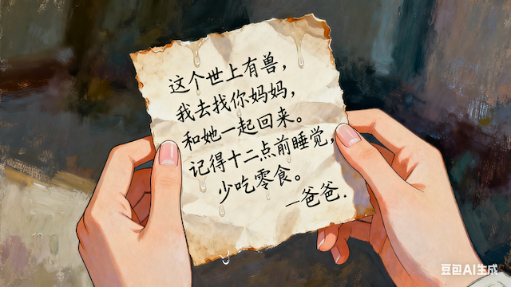

结局 5 · 最终结局 · 邂逅黑猫奶茶店
四杯饮料如同魔术般出现在空无一人的柜台上。四杯饮料的量很少，一口就能饮尽，但你犹豫了很久，犹豫到了奶茶店再次开始摇晃，眩晕感袭来，你知道时间不多了。
依次喝完四杯饮料，眼前的一切开始慢慢稳定，颤动碎裂的空间与时间开始愈合。
但你的内心中，原有的迷惑、好奇、惊慌逐渐消退。代替的，是悲伤，痛苦和思念。梦境结束了，你的记忆回来了。
脑海中第一个浮现出的，是一张多年前的字条，上面的字是爸爸的：
"这个世上有兽，我去找你妈妈，和她一起回来。记得十二点前睡觉，少吃零食。爸爸"

——“但我真的好想你，爸爸”
你知道，虽然刚刚结束的一切是一场梦，但是确实是你能召唤白色恶魔的唯一机会。你在爸爸当年的账号中找到了他当年和SPECIES公司交流的记录，于是你追随爸爸的脚步，也与SPECIES公司达成了交易，试图在梦中收集白色恶魔的召唤条件。
梦境里，你失去了大部分对现实的记忆。只有这样找到白色恶魔的线索，才能证明你强烈的愿望。
但是你忽略了一件事：梦境是虚幻的，又怎么可能是正确的坐标呢？
所以，从一开始，召唤白色恶魔就是一个不可能实现的事情。而SPECIES公司做这一切，只是因为他们乐于戏弄人心罢了。
幸好，在一切都不可挽回之前，你终于看到了牵着咪咪的拉玛,黑猫奶茶店的店主，曾和你的父亲2258号捕兽人一起试图拯救Anni的”Rama“
没事的，你不会被白色恶魔吞噬的。米都斯卡亚家族与白色恶魔进行交易，凭借的正是米拉尔沃斯。当你召唤了白色恶魔之后，只有它能够使时间轴稳定下来。
"它是脆弱的人类所拥有的唯一可以对抗时间和死亡的力量。这种力量存在于你爸爸妈妈的身上，也存在于我们每个人的心底。如果打个比方，你不妨将它看成是这个世界上最小的质数，也是构成世界的基础……有时它睡在一幅曲里，有时它从文字上走过，有时它在音符间跳跃。咪咪活了很久，在有人类以来它就一直存在。”
"这城市何其美丽，又何其丑陋，何其简单，又何其复杂，它承载着我们的希望，也毁灭了我们的希望。你爸爸和妈妈拥有一颗珍贵的、真正的心，但他们被这个空洞的世界所裹挟，身不由己。我想他们会很高兴看到，他们的孩子也继承了这样的心灵，而且没有在错误的道路上走下去。"
"欢迎回来，多莉。"